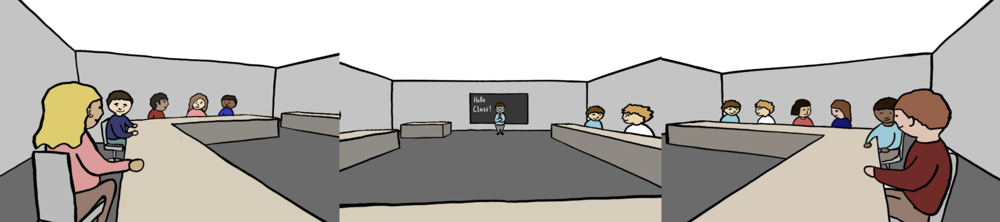
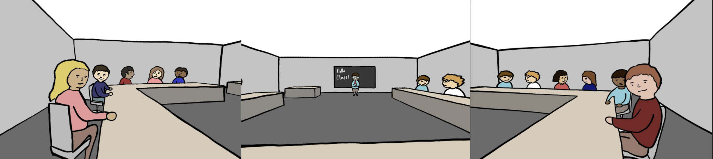

Background
Our final project was about Experience. What was the most meaningful experiences that compel you, quicken your emotions, help you make poetic meaning, and amplify human moments that help you better understand who you are?
Mine was about my first ever Chemistry class in the U.S. It was a big class with 100 more people. When the professor asked us to introduce ourself to the people to our left and right, I wasn't sure what to do. I sat in the center of the room with no one turning to me. All of a sudden everyone was laughing. What was going on? I thought the professor just told a joke. I didn't catch it. What was it? Was it fun? I laughed as well.
We wanted to recreate the awkward moment in VR and provoke our audience to think. How might we get along better with people from different cultural backgrounds? How can we understand them better?
Final Demo
Mobile VR
InstaVR
Please try out the experience via this link!
Process
Cringeworthy Moments
Replicating an awkward experience can be a challenging task. Although we know the feeling of awkwardness and embarrassment, yet it is not a simple thing to let our audience experience the same feeling. In addition to asking people around us about scenarios and situations they find awkward, we also try to find answers from books and research.
"If awkwardness sounds the alarm, cringing is what happens when it goes off. It's the intense visceral reaction produced by an awkward moment, an unpleasant kind of self-recognition where you suddenly see yourself through someone else's eyes. It's a forced moment of self-awareness, and it usually makes you cognizant of the disappointing fact that you aren't measuring up to your own self-concept. The alarm sounds, and the cringe tells you to abort..." -- Cringeworthy Moments: A Theory of Awkwardness
Language Barrier
How English sounds to non-English speakers? Language barrier is one of the key points in order to better allow the audience to experience the atmosphere we want to create. Research has been done to find how non-native speakers feel when they hear a foreign language. It's a familiar and unfamiliar feeling. We may or may not be able to guess the meaning from just a few words.
Here's a helpful video that guide our script!
Classroom Settings
From a public university to a private university, I went to all kinds of different classrooms. A large classroom might make me invisible while a small one might make me very nervous. To make the audience feel more pressed, we decided to go with a small classroom.
How should we design the classroom? What needs to be there? Based on our research, students can be intimidated about speaking up in the Horseshoe setting. People can see one another and there are more face-to-face interactions.


(Illustration by Leah)
Takeaways
Design in VR
As to make our project more accessible, we created the main part in Unity and then exported the 360 video to InstaVR. People can view our project in VR with their headset, phone or web browsers in ease. I learned how to utilize different tools to put together a complete project.
Frustration-centered Design
Instead of designing for our audience, we want people to feel the tension and frustration that one might experienced as an international student, a foreigner. This is very new to me. Even though we worked hard to frustrate our audience, we could still help them cultivate empathy during the process, which was our initial goal.
Remote Pair-design
Collaboration can be challenging, especially when we need to make sure we stay connected every step of the project. Instead of splitting the work in half, we decided to take a few hours together on Zoom. With remote control, we were able to stay on the same page and discuss our ideas along the way.